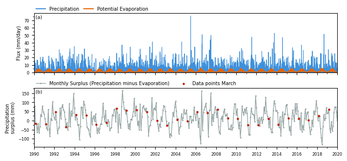
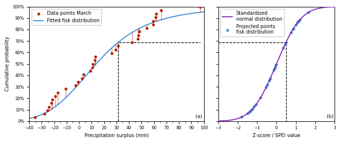
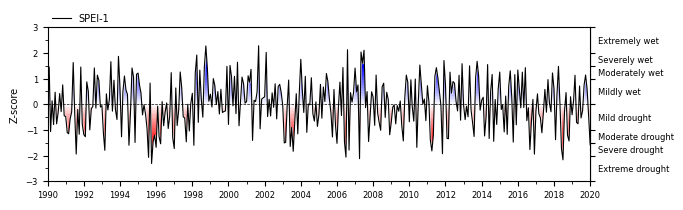
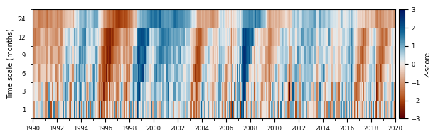
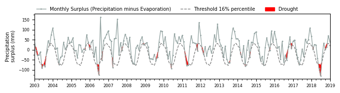

Article for Journal of Open Source Software¶
Martin Vonk (2025)
This notebook replicates the results presented in the article submitted to the Journal of Open Source Software (JOSS). JOSS is a developer-friendly, open-access academic journal (ISSN 2475-9066) dedicated to research software packages and features a formal peer-review process. The pre-review and review of the SPEI package are publicly available in issues openjournals/joss-reviews#8430 and openjournals/joss-reviews#8454, respectively.
Setup¶
[1]:
# dependencies
from typing import Literal
import matplotlib as mpl
import matplotlib.pyplot as plt
import numpy as np
import pandas as pd
import scipy.stats as sps
from cycler import cycler
from matplotlib import patheffects
from scipy.stats._survival import EmpiricalDistributionFunction
import spei as si
# matplotlib settings
plt.rcParams.update(
{
"axes.prop_cycle": cycler(
color=[
"#3f90da",
"#ffa90e",
"#bd1f01",
"#94a4a2",
"#832db6",
"#a96b59",
"#e76300",
"#b9ac70",
"#717581",
"#92dadd",
]
),
"axes.titlesize": 7.0,
"axes.labelsize": 7.0,
"xtick.labelsize": 6.0,
"ytick.labelsize": 6.0,
"legend.fontsize": 7.0,
"legend.framealpha": 1.0,
}
)
# helper functions
def axes_indicator(
ax: plt.Axes,
letter: str,
x: float,
y: float,
ha: Literal["left", "right"],
va: Literal["top", "bottom"],
):
"""Add an indicator to the axes."""
ax.annotate(
f"({letter})",
xy=(x, y),
xycoords="axes fraction",
fontsize=mpl.rcParams["axes.titlesize"],
horizontalalignment=ha,
verticalalignment=va,
path_effects=[
patheffects.Stroke(linewidth=1, foreground="white"),
patheffects.Normal(),
],
)
def plot_ecdf(
ax: plt.Axes,
data: pd.Series,
ecdf: EmpiricalDistributionFunction,
s: float,
color: str,
label: str,
cdf: pd.Series | None = None,
**kwargs,
) -> None:
data = data.drop_duplicates()
ax.scatter(
data,
ecdf.probabilities,
s=s,
facecolor=color,
label=label,
**kwargs,
)
if cdf is not None:
for idata, icdf, iecdf in zip(data, cdf, ecdf.probabilities):
ax.plot(
[idata, idata],
[iecdf, icdf],
color=color,
linewidth=0.5,
**kwargs,
)
return ecdf
Data¶
Load¶
[2]:
df = pd.read_csv("data/CABAUW.csv", index_col=0, parse_dates=True)
prec = df["prec"]
evap = df["evap"]
surplusd = prec - evap
surplus = surplusd.resample("MS").sum()
head = df["head"]
Plot¶
[3]:
# highlight specific month
month = 3
ts = pd.Timestamp("2000-{:02d}-01".format(month))
[4]:
fig, axd = plt.subplot_mosaic(
[["meteo"], ["sp"]], figsize=(7.0, 3.2), sharex=True, layout="constrained"
)
axd["meteo"].plot(prec.index, prec, linewidth=0.8, color="C0")
axd["meteo"].plot(evap.index, evap, linewidth=0.8, color="C6")
axd["meteo"].plot([], [], color="C0", label="Precipitation")
axd["meteo"].plot([], [], color="C6", label="Potential Evaporation")
axd["meteo"].legend(loc=(0, 1), ncol=2, frameon=False, columnspacing=1.0)
axd["meteo"].set_ylabel("Flux (mm/day)")
axd["meteo"].yaxis.set_major_locator(mpl.ticker.MultipleLocator(10))
axd["meteo"].yaxis.set_minor_locator(mpl.ticker.MultipleLocator(5))
axd["meteo"].set_ylim(bottom=0.0)
axes_indicator(axd["meteo"], letter="a", x=0.005, y=0.97, ha="left", va="top")
axd["sp"].plot(
surplus.index,
surplus.values,
color="C3",
linewidth=1.0,
marker=".",
markersize=2.0,
label="Monthly Surplus (Precipitation minus Evaporation)",
)
mid = surplus.index.month == ts.month
axd["sp"].scatter(
surplus.index[mid], # + pd.Timedelta(days=15),
surplus.values[mid],
color="C2",
s=5.0,
zorder=2,
label=f"Data points {ts.strftime('%B')}",
)
axd["sp"].yaxis.set_major_locator(mpl.ticker.MultipleLocator(50))
axd["sp"].yaxis.set_minor_locator(mpl.ticker.MultipleLocator(25))
axd["sp"].xaxis.set_minor_locator(mpl.dates.YearLocator(1))
axd["sp"].xaxis.set_major_locator(mpl.dates.YearLocator(2))
axd["sp"].set_xlim(surplus.index[0], surplus.index[-1])
axd["sp"].set_ylabel("Precipitation\nsurplus (mm)")
axd["sp"].legend(loc=(0, 1), frameon=False, ncol=2)
axes_indicator(axd["sp"], letter="b", x=0.005, y=0.97, ha="left", va="top")
axd["sp"].set_xlim(pd.Timestamp("1990"), pd.Timestamp("2020"))
# fig.savefig("../../paper/figures/monthly_precipitation_surplus.png", dpi=300, bbox_inches="tight")
[4]:
(np.float64(7305.0), np.float64(18262.0))

Standardized Index Procedure¶
Fit Distribution¶
[5]:
dist = sps.fisk
sispei = si.SI(
series=surplus,
dist=dist,
timescale=1,
# fit_freq="MS",
)
sispei.fit_distribution()
Equiprobability Transform¶
[6]:
fit_dist = sispei._dist_dict[ts]
data = fit_dist.data.sort_values()
cdf = fit_dist.cdf().loc[data.index]
ecdf = sps.ecdf(data).cdf
zscores = np.arange(-3.0, 3.1, 0.1)
norm_cdf = sps.norm.cdf(zscores, loc=0.0, scale=1.0)
norm_cdf_transformed = sps.norm.ppf(cdf.values, loc=0.0, scale=1.0)
fig, axd = plt.subplot_mosaic(
[["cdf", "norm"]],
figsize=(7.0, 3),
width_ratios=[1.5, 1.0],
sharey=True,
layout="tight",
)
plot_ecdf(
ax=axd["cdf"],
data=data,
cdf=cdf,
ecdf=ecdf,
s=10.0,
color="C2",
label=f"Data points {ts.strftime('%B')}",
zorder=3,
)
bin = 5.0
bins = np.arange(data.min() // bin * bin, data.max() + bin, bin)
axd["cdf"].plot(
bins,
fit_dist.dist.cdf(bins, *fit_dist.pars, loc=fit_dist.loc, scale=fit_dist.scale),
label=f"Fitted {dist.name} distribution",
color="C0",
)
axd["cdf"].legend(loc="upper left")
axd["cdf"].set_xlim(np.min(bins), np.max(bins))
axd["cdf"].xaxis.set_minor_locator(mpl.ticker.MultipleLocator(bin))
axd["cdf"].xaxis.set_major_locator(mpl.ticker.MultipleLocator(bin * 2))
axd["cdf"].set_ylim(0.0, 1.0)
axd["cdf"].yaxis.set_major_locator(mpl.ticker.MultipleLocator(0.1))
axd["cdf"].yaxis.set_major_formatter(mpl.ticker.PercentFormatter(1.0))
axd["cdf"].set_xlabel("Precipitation surplus (mm)")
axd["cdf"].set_ylabel("Cumulative probability")
axes_indicator(axd["cdf"], "a", 0.99, 0.02, ha="right", va="bottom")
axd["norm"].plot(
zscores, norm_cdf, label="Standardized\nnormal distribution", color="C4", zorder=3
)
axd["norm"].scatter(
norm_cdf_transformed,
cdf.values,
s=10.0,
label=f"Projected points\n{dist.name} distribution",
color="C0",
zorder=2,
)
axd["norm"].legend(loc="upper left")
axd["norm"].set_xlim(np.min(zscores), np.max(zscores))
axd["norm"].set_xlabel("Z-score / SPEI value")
# visualize specific data point
idx = data.index[20]
cdf_idx = cdf.at[idx]
ppf_idx = sps.norm.ppf(cdf_idx)
print(
f"Data index: {idx.strftime('%Y')}, Data value: {data.loc[idx]:0.2f} CDF: {cdf_idx:0.1%}, PPF: {ppf_idx:0.4f}"
)
axd["cdf"].plot(
[data.loc[idx], data.loc[idx], np.max(data)],
[0.0, cdf_idx, cdf_idx],
color="k",
linestyle="--",
linewidth=1.0,
zorder=0,
)
axd["norm"].plot(
[np.min(zscores), ppf_idx, ppf_idx],
[
cdf_idx,
cdf_idx,
0.0,
],
color="k",
linestyle="--",
linewidth=1.0,
zorder=0,
)
axes_indicator(axd["norm"], "b", 0.99, 0.02, ha="right", va="bottom")
# fig.savefig("../../paper/figures/surplus_fit_cdf.png", dpi=300, bbox_inches="tight")
Data index: 1994, Data value: 31.30 CDF: 68.9%, PPF: 0.4925

Results¶
Time Series¶
[7]:
spei1 = sispei.norm_ppf()
ax = si.plot.si(spei1, figsize=(7.0, 2.0), layout="tight")
# ax.xaxis.set_minor_locator(mpl.dates.MonthLocator())
ax.xaxis.set_minor_locator(mpl.dates.YearLocator(1))
ax.xaxis.set_major_locator(mpl.dates.YearLocator(2))
ax.legend(labels=["SPEI-1"], loc=(0, 1), frameon=False)
ax.set_xlim(pd.Timestamp("1990"), pd.Timestamp("2020"))
ax.set_ylabel("Z-score")
# ax.get_figure().savefig("../../paper/figures/spei1.png", dpi=300, bbox_inches="tight")
[7]:
Text(0, 0.5, 'Z-score')

Heatmap¶
[8]:
speis = [
spei1.rename("1"),
si.spei(surplus, timescale=3).rename("3"),
si.spei(surplus, timescale=6).rename("6"),
si.spei(surplus, timescale=9).rename("9"),
si.spei(surplus, timescale=12).rename("12"),
si.spei(surplus, timescale=24).rename("24"),
]
f, ax = plt.subplots(figsize=(7.0, 2.0))
si.plot.heatmap(speis, cmap="vik_r", vmin=-3, vmax=3, add_category=False, ax=ax)
ax.set_ylabel("Time scale (months)")
f.axes[-1].set_ylabel("Z-score")
ax.xaxis.set_minor_locator(mpl.dates.YearLocator(1))
ax.xaxis.set_major_locator(mpl.dates.YearLocator(2))
ax.set_xlim(pd.Timestamp("1990"), pd.Timestamp("2020"))
# ax.get_figure().savefig("../../paper/figures/spei_heatmap.png", dpi=300, bbox_inches="tight")
[8]:
(np.float64(7305.0), np.float64(18262.0))

Threshold¶
[9]:
perc = sps.norm.cdf(-1.0) # same as zscore -1.0
thres = sispei.ppf(perc).rename(f"Threshold {perc:0.0%} percentile")
fig, ax = plt.subplots(figsize=(7.0, 2.0), layout="tight")
ax = si.plot.threshold(
surplus,
thres,
ax=ax,
**dict(
color="C3",
linewidth=1.0,
marker=".",
markersize=2.0,
label="Monthly Surplus (Precipitation minus Evaporation)",
),
)
ax.set_xlim(pd.Timestamp("2003"), pd.Timestamp("2019"))
ax.yaxis.set_major_locator(mpl.ticker.MultipleLocator(50))
ax.yaxis.set_minor_locator(mpl.ticker.MultipleLocator(25))
ax.xaxis.set_major_locator(mpl.dates.YearLocator(1))
ax.xaxis.set_minor_locator(mpl.dates.MonthLocator([4, 7, 10]))
ax.set_ylabel("Precipitation\nsurplus (mm)")
ax.legend(ncol=3, loc=(0, 1), frameon=False)
# fig.savefig("../../paper/figures/threshold.png", dpi=300, bbox_inches="tight")
[9]:
<matplotlib.legend.Legend at 0x7fccd40b25d0>
